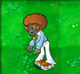

←
植物大战僵尸图鉴
舞者僵尸

舞者僵尸是植物大战僵尸中的僵尸。
图鉴
舞者僵尸
舞者僵尸和任何人（在世或离世）间的任何相似纯属巧合。
强度：
中
特殊：
召唤伴舞僵尸
舞者僵尸的最新专辑「抓脑子撒哺啦哺」在不死族界排行榜上飙升。
参考
植物大战僵尸中的僵尸
白天
僵尸
旗帜僵尸
交通锥僵尸
撑杆跳僵尸
铁桶僵尸
黑夜
报纸僵尸
纱门僵尸
橄榄球僵尸
舞者僵尸
（
旧
）
伴舞僵尸
（
旧
）
泳池
鸭子救生圈僵尸
潜水僵尸
僵尸洗冰车
僵尸雪橇小队
海豚骑手僵尸
浓雾
玩偶匣僵尸
气球僵尸
挖掘僵尸
蹦蹦僵尸
僵尸雪人
屋顶
蹦极僵尸
梯子僵尸
投石车僵尸
巨人僵尸
小鬼僵尸
僵王博士
特殊
万丈巨人僵尸
黑橄榄球僵尸
植物僵尸
豌豆射手僵尸
坚果墙僵尸
机枪豌豆僵尸
高坚果僵尸
倭瓜僵尸
火爆辣椒僵尸
植物图鉴
舞者僵尸
游戏数据
强度:
500
首次出场:
关卡2-8
名称一览